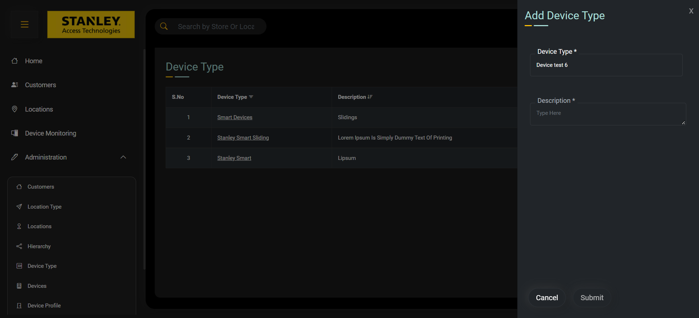
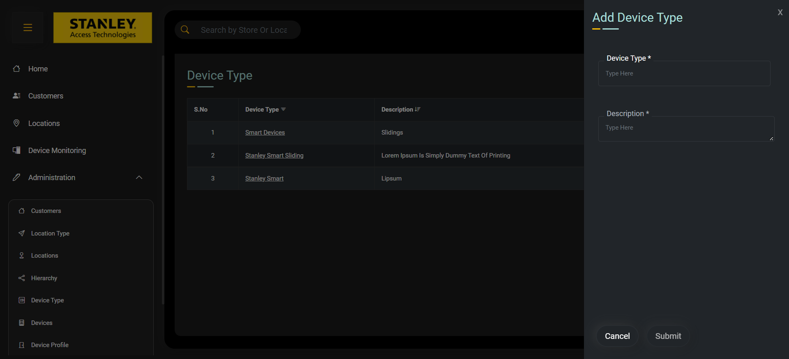
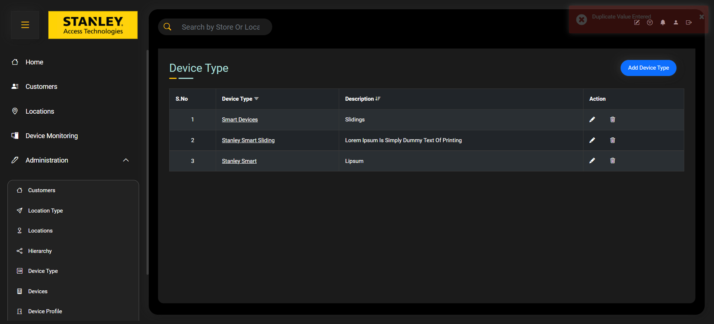
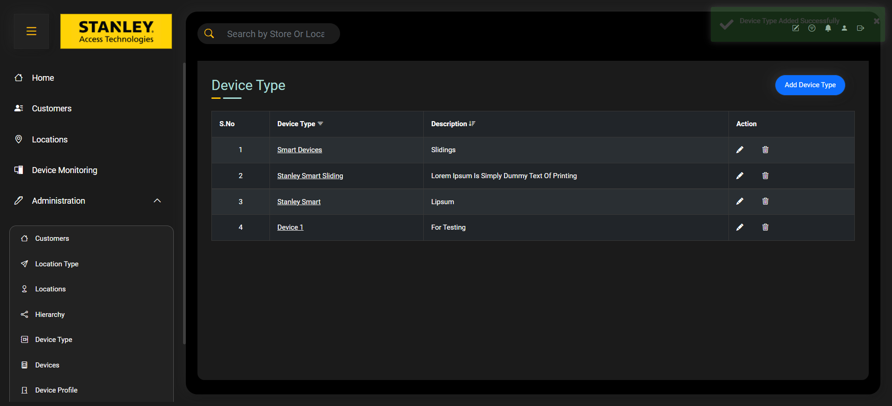

Started
Nov 25, 2022 06:30:10 PM
Ended
Nov 25, 2022 06:39:24 PM
Features Passed
0
Features Failed
5
Features
Scenarios
Steps
Timeline
-
To Add DeviceType
18:30:11 PM / 00:09:03:843 Fail
To Add DeviceType
11.25.2022 18:30:11 11.25.2022 18:39:15 00:09:03:843 · #test-id=1FailScenario to Add DeviceTypeFailScenario to Add DeviceTypeGiven Go To Add DeviceType PageWhen Enter Details Into Devicetype and Description "Device test 6" "For Testing 3"When Click On SubmitThen Verify Toaster Message "Device Type Added Successfully"Step skippedapphooks.ApplicationHooks.tearDown(io.cucumber.java.Scenario)Scenario_to_Add_DeviceTypeFailScenario to Add DeviceTypeGiven Go To Add DeviceType PageWhen Enter Details Into Devicetype and Description "Device test 9" "For Testing 3"When Click On SubmitStep skippedThen Verify Toaster Message "Device Type Added Successfully"Step skippedapphooks.ApplicationHooks.tearDown(io.cucumber.java.Scenario)Scenario_to_Add_DeviceTypeFailScenario to Add DeviceTypeGiven Go To Add DeviceType PageWhen Enter Details Into Devicetype and Description "Device test" "For Testing"When Click On SubmitThen Verify Toaster Message "Device Type Added Successfully"apphooks.ApplicationHooks.tearDown(io.cucumber.java.Scenario)Scenario_to_Add_DeviceTypePassScenario to Add DeviceTypeGiven Go To Add DeviceType PageWhen Enter Details Into Devicetype and Description "Device 1 " "For Testing"When Click On SubmitThen Verify Toaster Message "Device Type Added Successfully"FailScenario to Add DeviceTypeGiven Go To Add DeviceType PageWhen Enter Details Into Devicetype and Description "Device" "-------"Step skippedWhen Click On SubmitStep skippedThen Verify Toaster Message "Device Type Added Successfully"Step skippedapphooks.ApplicationHooks.tearDown(io.cucumber.java.Scenario)FailScenario to Add DeviceTypeGiven Go To Add DeviceType PageWhen Enter Details Into Devicetype and Description "-------" "-------"When Click On SubmitThen Verify Toaster Message "Device Type Added Successfully"apphooks.ApplicationHooks.tearDown(io.cucumber.java.Scenario)Scenario_to_Add_DeviceTypeFailScenario to Add DeviceTypeGiven Go To Add DeviceType PageWhen Enter Details Into Devicetype and Description "Testing 1" "-------"Step skippedWhen Click On SubmitStep skippedThen Verify Toaster Message "Device Type Added Successfully"Step skippedapphooks.ApplicationHooks.tearDown(io.cucumber.java.Scenario)FailScenario to Add DeviceTypeGiven Go To Add DeviceType PageWhen Enter Details Into Devicetype and Description "Testing 1234" "123455"Step skippedWhen Click On SubmitStep skippedThen Verify Toaster Message "Device Type Added Successfully"Step skippedapphooks.ApplicationHooks.tearDown(io.cucumber.java.Scenario)FailScenario to Add DeviceTypeGiven Go To Add DeviceType PageWhen Enter Details Into Devicetype and Description "Stanley123" "-------"Step skippedWhen Click On SubmitStep skippedThen Verify Toaster Message "Device Type Added Successfully"Step skippedapphooks.ApplicationHooks.tearDown(io.cucumber.java.Scenario)FailScenario to Add DeviceTypeGiven Go To Add DeviceType PageWhen Enter Details Into Devicetype and Description "-------" "stanley123"Step skippedWhen Click On SubmitStep skippedThen Verify Toaster Message "Device Type Added Successfully"Step skippedapphooks.ApplicationHooks.tearDown(io.cucumber.java.Scenario) -
Verify Device Profile Page
18:39:15 PM / 00:00:03:052 Fail
Verify Device Profile Page
11.25.2022 18:39:15 11.25.2022 18:39:18 00:00:03:052 · #test-id=93FailVerify Device Profile pageGiven User is on Device Profile pageWhen Verify Device Profile headingStep skippedAnd Verify Add Device Profile buttonStep skippedAnd Verify Table column NamesStep skippedThen Verify Table DataStep skippedapphooks.ApplicationHooks.tearDown(io.cucumber.java.Scenario) -
Verify Created Device Type already exists in Table
18:39:18 PM / 00:00:01:897 Fail
Verify Created Device Type already exists in Table
11.25.2022 18:39:18 11.25.2022 18:39:20 00:00:01:897 · #test-id=104FailVerify Created Device Type already exists in TableGiven User is on Device Type PageWhen Verify Device Type HeadingStep skippedAnd Verify Add Device Type buttonStep skippedAnd Verify Device Type Column NamesStep skippedThen Verify Device Type Table DataStep skippedapphooks.ApplicationHooks.tearDown(io.cucumber.java.Scenario) -
Verify Devices Page
18:39:20 PM / 00:00:02:180 Fail
Verify Devices Page
11.25.2022 18:39:20 11.25.2022 18:39:22 00:00:02:180 · #test-id=115FailVerify Devices pageGiven user is on Devices pageWhen Verify Devices headingStep skippedAnd Verify Devices Column NamesStep skippedThen Verify Devices TableStep skippedapphooks.ApplicationHooks.tearDown(io.cucumber.java.Scenario) -
To Login
18:39:22 PM / 00:00:01:878 Fail
To Login
11.25.2022 18:39:22 11.25.2022 18:39:24 00:00:01:878 · #test-id=125FailScenario to LoginFailScenario to LoginGiven Enter the username and password "superadmin" "stanley@123"When click on loginStep skippedThen verify the home pageStep skippedapphooks.ApplicationHooks.tearDown(io.cucumber.java.Scenario)
-
org.openqa.selenium.remote.UnreachableBrowserException
1 tests
org.openqa.selenium.remote.UnreachableBrowserException
1 failedStatus Timestamp TestName Fail 18:37:45 PM Given Go To Add DeviceType Page To Add DeviceType.Scenario to Add DeviceType.Given Go To Add DeviceType PageFail 18:38:03 PM apphooks.ApplicationHooks.tearDown(io.cucumber.java.Scenario) To Add DeviceType.Scenario to Add DeviceType.apphooks.ApplicationHooks.tearDown(io.cucumber.java.Scenario) -
org.openqa.selenium.NoSuchWindowException
1 tests
org.openqa.selenium.NoSuchWindowException
1 failedStatus Timestamp TestName Fail 18:39:02 PM Given Go To Add DeviceType Page To Add DeviceType.Scenario to Add DeviceType.Given Go To Add DeviceType PageFail 18:39:02 PM apphooks.ApplicationHooks.tearDown(io.cucumber.java.Scenario) To Add DeviceType.Scenario to Add DeviceType.apphooks.ApplicationHooks.tearDown(io.cucumber.java.Scenario)Fail 18:39:08 PM Given Go To Add DeviceType Page To Add DeviceType.Scenario to Add DeviceType.Given Go To Add DeviceType PageFail 18:39:08 PM apphooks.ApplicationHooks.tearDown(io.cucumber.java.Scenario) To Add DeviceType.Scenario to Add DeviceType.apphooks.ApplicationHooks.tearDown(io.cucumber.java.Scenario)Fail 18:39:13 PM Given Go To Add DeviceType Page To Add DeviceType.Scenario to Add DeviceType.Given Go To Add DeviceType PageFail 18:39:13 PM apphooks.ApplicationHooks.tearDown(io.cucumber.java.Scenario) To Add DeviceType.Scenario to Add DeviceType.apphooks.ApplicationHooks.tearDown(io.cucumber.java.Scenario)Fail 18:39:15 PM Given Go To Add DeviceType Page To Add DeviceType.Scenario to Add DeviceType.Given Go To Add DeviceType PageFail 18:39:15 PM apphooks.ApplicationHooks.tearDown(io.cucumber.java.Scenario) To Add DeviceType.Scenario to Add DeviceType.apphooks.ApplicationHooks.tearDown(io.cucumber.java.Scenario)Fail 18:39:18 PM Given User is on Device Profile page Verify Device Profile Page.Verify Device Profile page.Given User is on Device Profile pageFail 18:39:18 PM apphooks.ApplicationHooks.tearDown(io.cucumber.java.Scenario) Verify Device Profile Page.Verify Device Profile page.apphooks.ApplicationHooks.tearDown(io.cucumber.java.Scenario)Fail 18:39:20 PM Given User is on Device Type Page Verify Created Device Type already exists in Table.Verify Created Device Type already exists in Table.Given User is on Device Type PageFail 18:39:20 PM apphooks.ApplicationHooks.tearDown(io.cucumber.java.Scenario) Verify Created Device Type already exists in Table.Verify Created Device Type already exists in Table.apphooks.ApplicationHooks.tearDown(io.cucumber.java.Scenario)Fail 18:39:22 PM Given user is on Devices page Verify Devices Page.Verify Devices page.Given user is on Devices pageFail 18:39:22 PM apphooks.ApplicationHooks.tearDown(io.cucumber.java.Scenario) Verify Devices Page.Verify Devices page.apphooks.ApplicationHooks.tearDown(io.cucumber.java.Scenario)Fail 18:39:24 PM Given Enter the username and password "superadmin" "stanley@123" To Login.Scenario to Login.Given Enter the username and password "superadmin" "stanley@123"Fail 18:39:24 PM apphooks.ApplicationHooks.tearDown(io.cucumber.java.Scenario) To Login.Scenario to Login.apphooks.ApplicationHooks.tearDown(io.cucumber.java.Scenario) -
org.openqa.selenium.TimeoutException
1 tests
org.openqa.selenium.TimeoutException
1 failedStatus Timestamp TestName Fail 18:31:04 PM When Enter Details Into Devicetype and Description "Device test 9" "For Testing 3" To Add DeviceType.Scenario to Add DeviceType.When Enter Details Into Devicetype and Description "Device test 9" "For Testing 3" -
org.openqa.selenium.ElementClickInterceptedException
1 tests
org.openqa.selenium.ElementClickInterceptedException
1 failedStatus Timestamp TestName Fail 18:30:36 PM When Click On Submit To Add DeviceType.Scenario to Add DeviceType.When Click On Submit -
java.lang.AssertionError
1 tests
java.lang.AssertionError
1 failedStatus Timestamp TestName Fail 18:37:05 PM Then Verify Toaster Message "Device Type Added Successfully" To Add DeviceType.Scenario to Add DeviceType.Then Verify Toaster Message "Device Type Added Successfully"Fail 18:38:56 PM Then Verify Toaster Message "Device Type Added Successfully" To Add DeviceType.Scenario to Add DeviceType.Then Verify Toaster Message "Device Type Added Successfully"